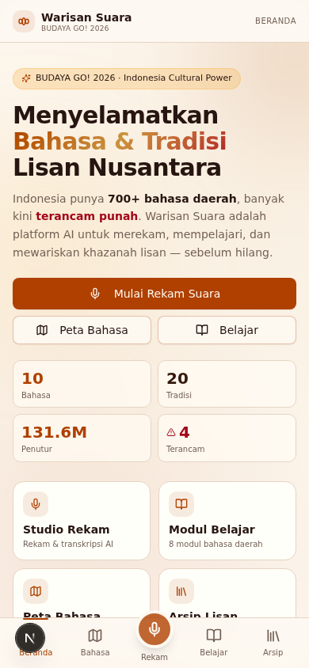

BUDAYA GO! 2026 · INDONESIA CULTURAL POWER
WARISAN
SUARA
Platform AI untuk Pelestarian Bahasa & Tradisi Lisan Nusantara
KOMPETISI INOVASI BUDAYA INDONESIA · KEMENTERIAN KEBUDAYAAN RI
KETUA
Febri Rizki, S.Si., M.Si.
AI Engineer & Web App Developer
ANGGOTA
Oki Handinata, S.Si.
UI/UX Designer
ANGGOTA
Martha Martinni, S.Si.
Strategi Startup & Model Bisnis
WS

TAMPILAN BERANDA